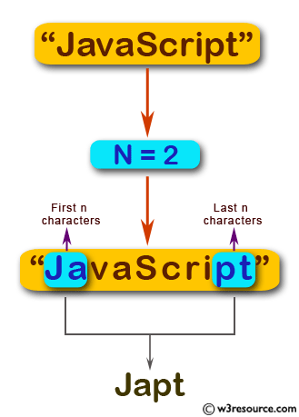

Escriba un programa JavaScript para crear una nueva cadena usando los primeros y últimos n caracteres de una cadena dada. La longitud de la cadena debe ser mayor o igual a n. R:68
Escriba aquí si cadena:
Escoja un número N para recortar ese número de carácteres antes y al final:
Verifica tu cadena
Descripción gráfica del Ejercicio.
